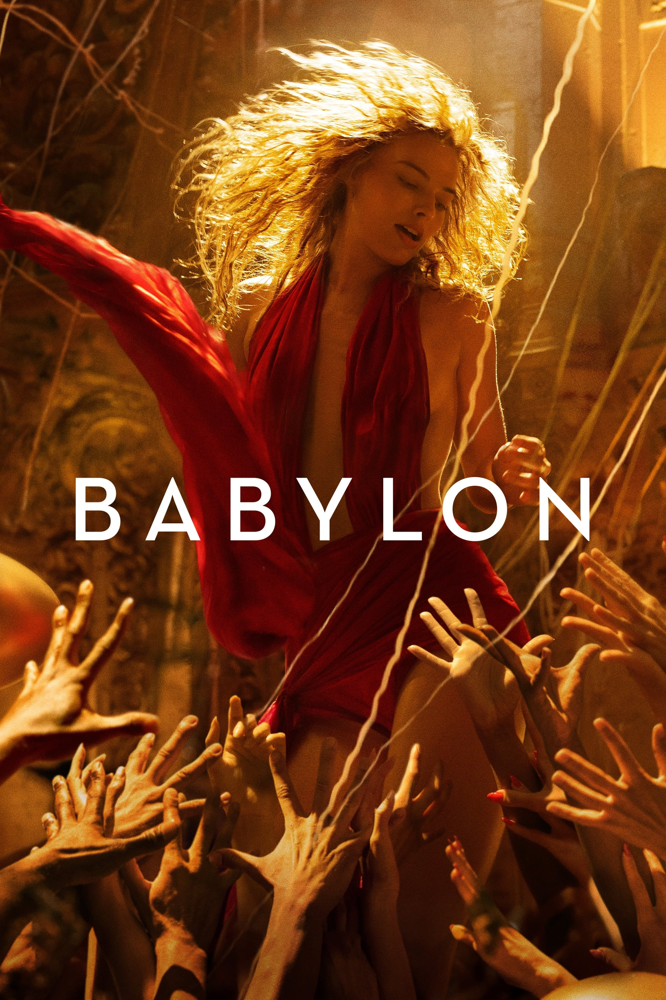
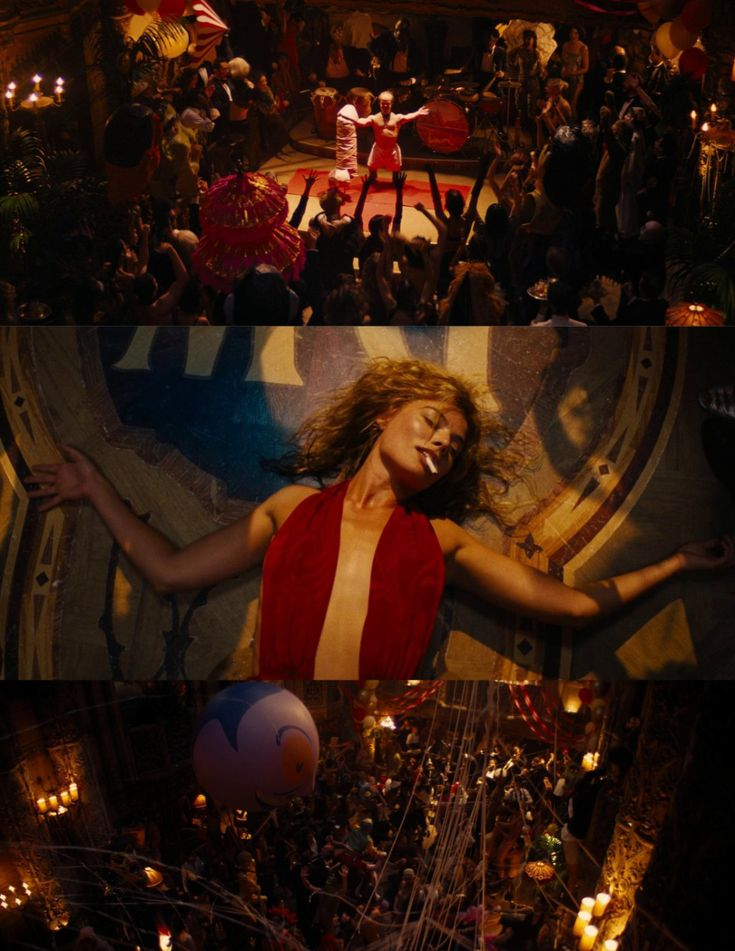
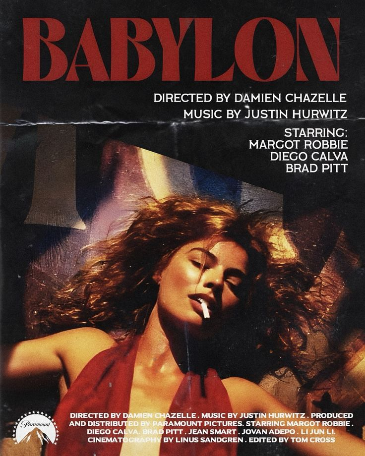

Comedy-Drama
2022
189 minutes
Damien Chazelle
Babylon is an epic drama set during Hollywood's transition from silent films to talking pictures in the late 1920s. Through the intertwined lives of aspiring actor Manny Torres, silent film superstar Jack Conrad, and ambitious actress Nellie LaRoy, the film explores the glamour, excess, ambition, and inevitable decline that defined one of the most transformative eras in cinema.